What Moves Markets?
This page gives a basic overview of the event database from the paper "What Moves Markets?" by Mark Kerssenfischer and Maik Schmeling
Notes:
- The list of events is chronological. Intraday timestamps refer to US Eastern Time (variables "start" and "end") or Central European Time ("start_CET" and "end_CET").
- Each event is classified into one of four "types": 1) macroeconomic data release, 2) central bank announcement, 3) auction news and 4) other ad hoc event. These types are further subdivided into various "subtypes" and "subsubtypes".
- The "description" variable contains further info on the news event and the "source" variable provides links (if available). See also the paper's appendix for details regarding the data sources. The "unscheduled" variable identifies unscheduled events (e.g. unscheduled FOMC announcements).
- To make the event database more manageable, we exclude macroeconomic data releases that are not deemed important by LASSO for any asset.
Contents
Data Format
display first event of each subsubtype
start end name type subtype subsubtype description source scheduled start_CET end_CET
___________________ ___________________ _________________________________________________ _____________ ______________________________ ______________________________________________ _______________________________________________________________________________________________________________________________________________________________________________________________________ _______________________________________________________________________________________________________________________________________________________________________________________________ _________ ___________________ ___________________
01.03.2002 01:00:00 NaT FI Consumer Confidence Macro Release FI Consumer Confidence - Bloomberg 1 01.03.2002 07:00:00 NaT
01.03.2002 01:30:00 NaT CH CPI Macro Release CH CPI - Bloomberg 1 01.03.2002 07:30:00 NaT
01.03.2002 03:00:00 NaT IT CPI Macro Release IT CPI - Bloomberg 1 01.03.2002 09:00:00 NaT
01.03.2002 04:30:00 NaT UK Monetary Aggregates Macro Release UK Monetary Aggregates - Bloomberg 1 01.03.2002 10:30:00 NaT
01.03.2002 06:00:00 NaT EA Retail Sales & EA Retail Trade Macro Release EA Retail Sales & EA Retail Trade - Bloomberg 1 01.03.2002 12:00:00 NaT
01.03.2002 09:00:00 NaT ECB: Weekly Financial Statement Central Bank ECB Weekly Financial Statement - ECB website 1 01.03.2002 15:00:00 NaT
01.03.2002 09:45:00 NaT US University of Michigan Surveys Macro Release US University of Michigan Surveys - Bloomberg 1 01.03.2002 15:45:00 NaT
04.03.2002 02:00:00 NaT DE Import Price Index Macro Release DE Import Price Index - Bloomberg 1 04.03.2002 08:00:00 NaT
04.03.2002 06:30:00 NaT NO Unemployment Rate Macro Release NO Unemployment Rate - Bloomberg 1 04.03.2002 12:30:00 NaT
04.03.2002 08:30:00 NaT Fed: Speech by FOMC member Central Bank Fed Speech by FOMC member A supervisory perspective on disaster recovery and business continuity https://www.federalreserve.gov/boarddocs/speeches/2002/20020304/default.htm 0 04.03.2002 14:30:00 NaT
04.03.2002 11:30:00 NaT US Auction Announcement Bill Auction US Announcement Bill CUSIP 912795JN2 https://www.treasurydirect.gov/instit/annceresult/press/preanre/2002/ofb30402.pdf 1 04.03.2002 17:30:00 NaT
05.03.2002 00:00:00 NaT BoJ: Minutes Central Bank BoJ Minutes Minutes on January 15/16 Meeting https://www.boj.or.jp/en/mopo/mpmsche_minu/minu_2002/g020116.htm/ 1 05.03.2002 06:00:00 NaT
05.03.2002 05:15:00 NaT ECB: MRO Central Bank ECB MRO - ECB website 1 05.03.2002 11:15:00 NaT
05.03.2002 09:00:00 NaT BoC: Press Release Central Bank BoC Press Release overnight rate unchanged at 2 per cent https://www.bankofcanada.ca/2002/03/bank-canada-keeps-target-overnight-rate-2-per-cent/ 1 05.03.2002 15:00:00 NaT
05.03.2002 13:05:00 NaT US Auction Result Bill Auction US Result Bill CUSIP 912795JN2 https://www.treasurydirect.gov/instit/annceresult/press/preanre/2002/ofb30402.pdf 1 05.03.2002 19:05:00 NaT
05.03.2002 17:30:00 NaT RBA: Press Release Central Bank RBA Press Release cash rate kept unchanged at 4.25 per cent https://global.factiva.com/redir/default.aspx?P=sa&an=dji0000020020305dy35001fx&cat=a&ep=ASE 1 05.03.2002 23:30:00 NaT
06.03.2002 02:45:00 NaT ES Unemployment Net Macro Release ES Unemployment Net - Bloomberg 1 06.03.2002 08:45:00 NaT
06.03.2002 02:45:00 NaT FR Budget Balance Macro Release FR Budget Balance - Bloomberg 1 06.03.2002 08:45:00 NaT
06.03.2002 03:30:00 NaT SE Budget Balance Macro Release SE Budget Balance - Bloomberg 1 06.03.2002 09:30:00 NaT
06.03.2002 14:00:00 NaT Fed: Beige Book Central Bank Fed Beige Book Beige Book Release https://www.federalreserve.gov/fomc/beigebook/2002/20020306/default.htm 1 06.03.2002 20:00:00 NaT
07.03.2002 00:00:00 NaT JP Cabinet Office Indices Macro Release JP Cabinet Office Indices - Bloomberg 1 07.03.2002 06:00:00 NaT
07.03.2002 07:00:00 NaT BoE: Press Release Central Bank BoE Press Release MPD: Interest Rates remain at 4.0% https://www.bankofengland.co.uk/-/media/boe/files/news/2002/march/mpc-march-2002.pdf?la=en&hash=BE20AF912D6F58B93EC9F3AE34D4D7F4FC81C5B4 1 07.03.2002 13:00:00 NaT
07.03.2002 07:45:00 NaT ECB: Press Release Central Bank ECB Press Release GCM PR: no change https://www.ecb.europa.eu/press/pr/date/2002/html/pr020307.en.html 1 07.03.2002 13:45:00 NaT
07.03.2002 08:30:00 07.03.2002 09:08:00 ECB: Press Conference Central Bank ECB Press Conference GCM PC, Duisenberg: "We are indeed reasonably optimistic [regarding the economic outlook]" https://www.ecb.europa.eu/press/pressconf/2002/html/is020307.en.html 1 07.03.2002 14:30:00 07.03.2002 15:08:00
07.03.2002 10:00:00 07.03.2002 12:35:00 Fed: Speech by Chair Central Bank Fed Speech by Chair Greenspan Senate Testimony (Monetary Policy Report) https://www.govinfo.gov/content/pkg/CHRG-107shrg80301/pdf/CHRG-107shrg80301.pdf 1 07.03.2002 16:00:00 07.03.2002 18:35:00
08.03.2002 06:00:00 NaT GR CPI & GR CPI EU Harmonized Macro Release GR CPI & GR CPI EU Harmonized - Bloomberg 1 08.03.2002 12:00:00 NaT
11.03.2002 03:30:00 NaT NL Industrial Sales & NL Manufacturing Production Macro Release NL Industrial Sales & NL Manufacturing Production - Bloomberg 1 11.03.2002 09:30:00 NaT
12.03.2002 19:15:00 NaT CN CPI Macro Release CN CPI - Bloomberg 1 13.03.2002 01:15:00 NaT
13.03.2002 03:30:00 NaT DK Trade & Current Account Balance Macro Release DK Trade & Current Account Balance - Bloomberg 1 13.03.2002 09:30:00 NaT
14.03.2002 04:00:00 NaT ECB: Economic Bulletin Central Bank ECB Economic Bulletin Monthly Bulletin https://www.ecb.europa.eu/pub/pdf/mobu/mb200203en.pdf 1 14.03.2002 10:00:00 NaT
18.03.2002 09:45:00 NaT PT Current Account Balance Macro Release PT Current Account Balance - Bloomberg 1 18.03.2002 15:45:00 NaT
19.03.2002 02:30:00 NaT ECB: Speech by GC member Central Bank ECB Speech by GC member Belgian National Bank's Smets Speaks at Business Breakfast Bloomberg 0 19.03.2002 08:30:00 NaT
19.03.2002 03:00:00 NaT Riksbank: Press Release Central Bank Riksbank Press Release Repo Rate Decision: 25bp hike to 4.0 percent - 1 19.03.2002 09:00:00 NaT
19.03.2002 14:15:00 NaT Fed: Press Release Central Bank Fed Press Release FOMC Statement: Rates unchanged https://www.federalreserve.gov/boarddocs/press/general/2002/20020319/ 1 19.03.2002 20:15:00 NaT
19.03.2002 23:35:00 NaT BoJ: Press Release Central Bank BoJ Press Release BoJ: MP unchanged. The Bank of Japan will conduct money market operations, aiming at the outstanding balance of the current accounts at the Bank at around 10 to 15 trillion yen. https://www.boj.or.jp/en/announcements/release_2002/k020320.htm/ 1 20.03.2002 05:35:00 NaT
20.03.2002 04:30:00 NaT BoE: Minutes Central Bank BoE Minutes Minutes of MPC meeting on 6 and 7 March 2002 https://www.bankofengland.co.uk/-/media/boe/files/minutes/2002/minutes-march-2002.pdf?la=en&hash=F8D584997A36A0EA45B26560C9A03FC5101F4449 1 20.03.2002 10:30:00 NaT
20.03.2002 14:30:00 NaT US Auction Announcement Note Auction US Announcement Note CUSIP 912828AA8 https://www.treasurydirect.gov/instit/annceresult/press/preanre/2002/ofd32002.pdf 1 20.03.2002 20:30:00 NaT
21.03.2002 08:00:00 NaT SNB: Press Release Central Bank SNB Press Release Unchanged monetary policy - target range for the three-month Libor rate remains at 1.25%-2.25% https://www.snb.ch/en/mmr/reference/pre_20020321/source/pre_20020321.en.pdf 1 21.03.2002 14:00:00 NaT
21.03.2002 14:00:00 NaT Fed: Minutes Central Bank Fed Minutes FOMC Meeting Minutes https://www.federalreserve.gov/fomc/minutes/20020130.htm 1 21.03.2002 20:00:00 NaT
22.03.2002 00:00:00 NaT BoJ: Monthly Report Central Bank BoJ Monthly Report Monthly Report of Recent Economic and Financial Developments: The Bank's View https://www.boj.or.jp/en/mopo/gp_2002/gp0203.htm/ 1 22.03.2002 06:00:00 NaT
27.03.2002 13:05:00 NaT US Auction Result Note Auction US Result Note CUSIP 912828AA8 https://www.treasurydirect.gov/instit/annceresult/press/preanre/2002/ofd32002.pdf 1 27.03.2002 19:05:00 NaT
29.03.2002 14:00:00 NaT Fed: Discount Rate Minutes Central Bank Fed Discount Rate Minutes Discount Rate Minutes https://www.federalreserve.gov/boarddocs/press/General/2002/20020329/attachment.pdf 1 29.03.2002 20:00:00 NaT
08.04.2002 05:00:00 NaT Riksbank: Minutes Central Bank Riksbank Minutes Minutes from 18 March 2002 http://archive.riksbank.se/en/Web-archive/Published/Minutes-of-the-Executive-Boards-monetary-policy-meetings/2002/Separate-minutes-from-the-Executive-Board-meeting-on-18-March-2002/index.html 1 08.04.2002 11:00:00 NaT
18.04.2002 11:48:00 18.04.2002 12:45:00 Ad Hoc: Other Unscheduled Event Ad Hoc Other Unscheduled Event - An airplane crashes into a skyscraper in Milan, Italy, raising fears of a terrorist attack because of the similarities with the 9/11 attacks. https://en.wikipedia.org/wiki/2002_Pirelli_Tower_airplane_crash 0 18.04.2002 17:48:00 18.04.2002 18:45:00
19.04.2002 07:45:00 NaT ECB: Speech by President Central Bank ECB Speech by President Duisenberg: Some remarks on the euro in a US context https://www.ecb.europa.eu/press/key/date/2002/html/sp020419.en.html 0 19.04.2002 13:45:00 NaT
26.04.2002 04:00:00 NaT Riksbank: Press Conference Central Bank Riksbank Press Conference PC - 1 26.04.2002 10:00:00 NaT
15.05.2002 05:30:00 15.05.2002 06:30:00 BoE: Inflation Reports Central Bank BoE Inflation Reports Quarterly Inflation Report https://www.bankofengland.co.uk/-/media/boe/files/inflation-report/2002/may-2002.pdf?la=en&hash=9E8BD9AA0E9D95CA8D95F66569A61B318D189DA3 1 15.05.2002 11:30:00 15.05.2002 12:30:00
07.06.2002 10:15:00 NaT BE Budget Balance Macro Release BE Budget Balance - Bloomberg 1 07.06.2002 16:15:00 NaT
14.06.2002 04:00:00 14.06.2002 05:30:00 SNB: Press Conference Central Bank SNB Press Conference Roth: "SNB has enough leeway to move rates should the European economy take longer to rebound than expected, or upward pressure on the Swiss franc resumes" https://global.factiva.com/redir/default.aspx?P=sa&an=dji0000020020614dy6e000id&cat=a&ep=ASE 1 14.06.2002 10:00:00 14.06.2002 11:30:00
20.09.2002 06:00:00 NaT BoE: Speech by Governor Central Bank BoE Speech by Governor George: "there is a reasonable prospect that global demand will pick up gradually" https://www.bankofengland.co.uk/-/media/boe/files/speech/2002/edward-george-west-midlands-conference.pdf?la=en&hash=06AFC3A65579A2E1253CD99C6EACAC61972A5736 0 20.09.2002 12:00:00 NaT
22.09.2002 12:00:00 NaT Ad Hoc: Iraq War Ad Hoc Iraq War - Having voiced strong anti-war views during the campaign, Gerhard Schroeder wins German election. Wolfers & Zitzewitz (2009) 0 22.09.2002 18:00:00 NaT
07.10.2002 03:45:00 NaT AT Wholesale Price Index Macro Release AT Wholesale Price Index - Bloomberg 1 07.10.2002 09:45:00 NaT
24.10.2002 08:36:00 24.10.2002 09:30:00 ECB: Ad Hoc Press Release Central Bank ECB Ad Hoc Press Release PR: ECB to make stability pact statement; "Problems have arisen not because the rules are inflexible, but as a result of some countries' unwillingness to honour their commitment to respect the rules" https://www.ecb.europa.eu/press/pr/date/2002/html/pr021024_1.en.html 0 24.10.2002 14:36:00 24.10.2002 15:30:00
30.10.2002 00:45:00 NaT BoJ: Ad Hoc Press Release Central Bank BoJ Ad Hoc Press Release MP eased. CAB increased to ¥15-20 tr https://www.boj.or.jp/en/announcements/release_2002/k021030.htm/ 0 30.10.2002 06:45:00 NaT
19.12.2002 06:17:00 NaT DE Auction Issuance Plan Auction DE Issuance Plan - Release of Yearly Issuance Plan http://www.deutsche-finanzagentur.de/de/institutionelle-investoren/primaermarkt/auktionsergebnisse/ 1 19.12.2002 12:17:00 NaT
17.03.2003 12:15:00 NaT SNB: Speech by Chair Central Bank SNB Speech by Chair Roth: "We can raise liquidity in the system also in case of interest rates at 0%" https://global.factiva.com/redir/default.aspx?P=sa&an=dji0000020030317dz3h0011s&cat=a&ep=ASE 0 17.03.2003 18:15:00 NaT
17.07.2003 02:00:00 17.07.2003 03:00:00 BoJ: Press Conference Central Bank BoJ Press Conference Fukui: "Many of the uncertain factors such as the Iraq situation and SARS are receding. Our basic scenario, of a pick-up later this year, remains unchanged." https://global.factiva.com/redir/default.aspx?P=sa&an=lba0000020030717dz7h00dl7&cat=a&ep=ASE 1 17.07.2003 08:00:00 17.07.2003 09:00:00
24.09.2003 08:02:00 NaT Ad Hoc: OPEC Ad Hoc OPEC - OPEC meeting: cut production by 0,9 mbpd https://global.factiva.com/redir/default.aspx?P=sa&an=LBA0000020030924dz9o001jv&cat=a&ep=ASE 0 24.09.2003 14:02:00 NaT
01.01.2004 05:00:00 NaT FR Auction Result Bond or Note Auction FR Result Bond or Note - Bloomberg 1 01.01.2004 11:00:00 NaT
22.07.2004 11:00:00 NaT US Auction Announcement Bond Auction US Announcement Bond CUSIP 912810FR4 https://www.treasurydirect.gov/instit/annceresult/press/preanre/2004/ofp072204.pdf 1 22.07.2004 17:00:00 NaT
27.07.2004 13:05:00 NaT US Auction Result Bond Auction US Result Bond CUSIP 912810FR4 https://www.treasurydirect.gov/instit/annceresult/press/preanre/2004/ofp072204.pdf 1 27.07.2004 19:05:00 NaT
28.11.2004 05:30:00 NaT FR Auction Result Bill Auction FR Result Bill - Bloomberg 1 28.11.2004 11:30:00 NaT
05.01.2005 05:05:00 NaT DE Auction Result Note Auction DE Result Note ISIN DE0001135267 http://www.deutsche-finanzagentur.de/de/institutionelle-investoren/primaermarkt/auktionsergebnisse/ 1 05.01.2005 11:05:00 NaT
10.01.2005 05:05:00 NaT DE Auction Result Bill Auction DE Result Bill ISIN DE0001114759 http://www.deutsche-finanzagentur.de/de/institutionelle-investoren/primaermarkt/auktionsergebnisse/ 1 10.01.2005 11:05:00 NaT
26.01.2005 05:05:00 NaT DE Auction Result Bond Auction DE Result Bond ISIN DE0001135275 http://www.deutsche-finanzagentur.de/de/institutionelle-investoren/primaermarkt/auktionsergebnisse/ 1 26.01.2005 11:05:00 NaT
12.09.2005 05:00:00 NaT IT Auction Result Bill Auction IT Result Bill - Bloomberg 1 12.09.2005 11:00:00 NaT
13.09.2005 05:00:00 NaT IT Auction Result Bond or Note Auction IT Result Bond or Note - Bloomberg 1 13.09.2005 11:00:00 NaT
19.10.2005 04:30:00 NaT ES Auction Result Bill Auction ES Result Bill - Bloomberg 1 19.10.2005 10:30:00 NaT
20.10.2005 02:46:00 NaT ES Auction Result Bond or Note Auction ES Result Bond or Note - Bloomberg 1 20.10.2005 08:46:00 NaT
02.05.2006 06:47:00 NaT Ad Hoc: Sovereign Credit Ratings Ad Hoc Sovereign Credit Ratings - Fitch Upgrade and stable outlook for Belgium https://global.factiva.com/redir/default.aspx?P=sa&an=LBA0000020060502e2520018h&cat=a&ep=ASE 0 02.05.2006 12:47:00 NaT
09.01.2007 03:00:00 NaT SNB: Quarterly Bulletin Central Bank SNB Quarterly Bulletin Quarterly Bulletin (Monetary Policy Report - Economic Situation) https://global.factiva.com/redir/default.aspx?P=sa&an=DJI0000020070109e319000om&cat=a&ep=ASE 1 09.01.2007 09:00:00 NaT
24.07.2007 08:05:00 NaT Ad Hoc: Global Financial Crisis Ad Hoc Global Financial Crisis - Countrywide Financial Corporation warns of “difficult conditions.” Cayon et al. (2014) 0 24.07.2007 14:05:00 NaT
17.08.2007 08:15:00 NaT Fed: Ad Hoc Press Release Central Bank Fed Ad Hoc Press Release Federal Reserve Board Statement: reduce primary credit rate from 6.25% to 5.75%; allow the provision of term financing for as long as 30 days, renewable by the borrower https://www.federalreserve.gov/newsevents/pressreleases/monetary20070817c.htm 0 17.08.2007 14:15:00 NaT
11.03.2008 07:00:00 NaT BoE: Ad Hoc Press Release Central Bank BoE Ad Hoc Press Release PR: continuation of expanded 3-month long term repo open market operations against a wider range of high quality collateral https://www.bankofengland.co.uk/news/2008/march/central-bank-measures 0 11.03.2008 12:00:00 NaT
14.07.2009 05:53:00 14.07.2009 06:04:00 Ad Hoc: European Sovereign Debt Crisis Ad Hoc European Sovereign Debt Crisis - In comments to the press, Irish CB chief John Hurley warned that taxpayer would have to take a hit in purchasing loans from the banks in order to help restore financial stability. Bahaj (2019) 0 14.07.2009 11:53:00 14.07.2009 12:04:00
07.10.2009 08:00:00 NaT PL Official Reserves Macro Release PL Official Reserves - Bloomberg 1 07.10.2009 14:00:00 NaT
12.08.2010 04:28:00 NaT BoJ: Speech by Governor Central Bank BoJ Speech by Governor Shirakawa: There are substantial fluctuations in the foreign exchange and stock markets. BoJ will carefully monitor such developments https://global.factiva.com/redir/default.aspx?P=sa&an=DJON000020100812e68c0001p&cat=a&ep=ASE 0 12.08.2010 10:28:00 NaT
27.04.2011 14:15:00 27.04.2011 15:15:00 Fed: Press Conference Central Bank Fed Press Conference FOMC Press Conference https://www.federalreserve.gov/mediacenter/files/FOMCpresconf20110427.pdf 1 27.04.2011 20:15:00 27.04.2011 21:15:00
01.04.2014 01:00:00 NaT IE Investec Manufacturing PMI Macro Release IE Investec Manufacturing PMI - Bloomberg 1 01.04.2014 07:00:00 NaT
26.01.2015 09:45:00 NaT ECB: Asset Purchase Programmes Central Bank ECB Asset Purchase Programmes - ECB website 1 26.01.2015 15:45:00 NaT
19.02.2015 07:30:00 NaT ECB: Accounts Central Bank ECB Accounts Monetary Policy Accounts https://www.ecb.europa.eu/press/accounts/2015/html/mg150219.en.html 1 19.02.2015 13:30:00 NaT
06.08.2015 07:00:00 06.08.2015 07:45:00 BoE: Press Conference Central Bank BoE Press Conference MPD, Minutes, Inflation report (first "Super Thursday") https://www.bankofengland.co.uk/monetary-policy-summary-and-minutes/2015/mpc-august-2015 1 06.08.2015 13:00:00 06.08.2015 13:45:00
07.01.2016 18:50:00 NaT BoJ: Summary of Opinions Central Bank BoJ Summary of Opinions Summary of Opinions https://www.boj.or.jp/en/mopo/mpmsche_minu/opinion_2016/opi151218.pdf 1 08.01.2016 00:50:00 NaT
04.12.2016 17:23:00 NaT Ad Hoc: Trump Ad Hoc Trump - Did China ask us if it was OK to devalue their currency (making it hard for our companies to compete) heavily tax our products going into.. Twitter for Android 0 04.12.2016 23:23:00 NaT
31.01.2020 12:36:00 NaT Ad Hoc: Covid-19 Ad Hoc Covid-19 - Trump Weighs Tighter China Travel Restrictions In Response To Coronavirus - Washington Post https://global.factiva.com/redir/default.aspx?P=sa&an=LBA0000020200131eg1v03igt&cat=a&ep=ASE 0 31.01.2020 18:36:00 NaT
Number of Events by Type
Macro Release Central Bank Auction Ad Hoc Total
_____________ ____________ _______ ______ _____
27627 8670 14055 1219 51571
Number of Events by Subtype
For each type of event, show a "treemap" of subtypes and, if available, subsubtypes. The areas correspond to the number of events.
|||||||||||||||||||||||||||||||||||||||||||||||||| Event Type: Ad Hoc ||||||||||||||||||||||||||||||||||||||||||||||||||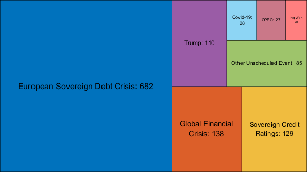
|||||||||||||||||||||||||||||||||||||||||||||||||| Event Type: Auction ||||||||||||||||||||||||||||||||||||||||||||||||||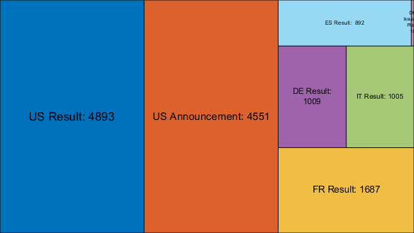

|||||||||||||||||||||||||||||||||||||||||||||||||| Event Type: Central Bank ||||||||||||||||||||||||||||||||||||||||||||||||||


|||||||||||||||||||||||||||||||||||||||||||||||||| Event Type: Macro Release ||||||||||||||||||||||||||||||||||||||||||||||||||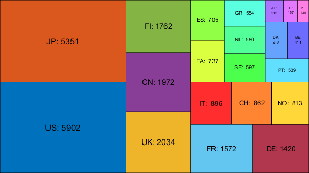 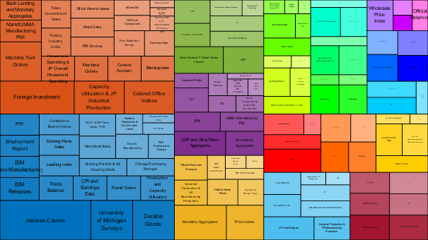
Events over Time
Number of monthly events for each type: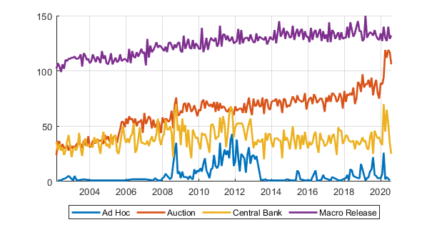
Number of quarterly events for each subtype: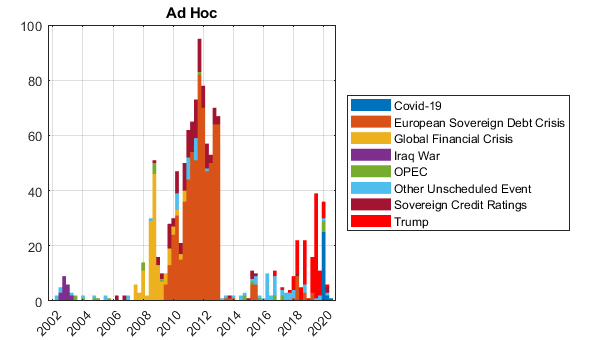 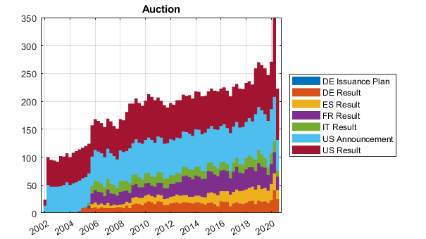

Central Bank Announcements over Time
number of quarterly events for each central bank

 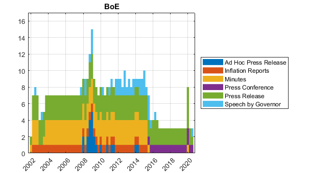
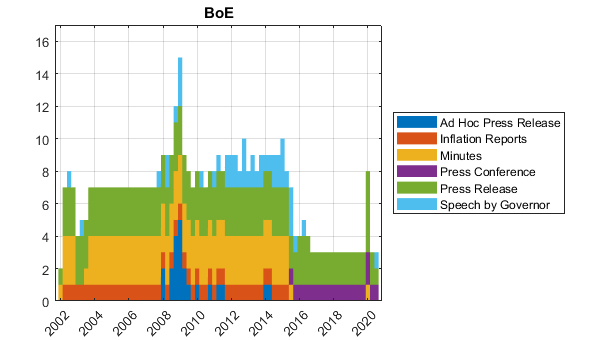 


Central Bank Announcements by Intraday Time
number of events by hour of the day
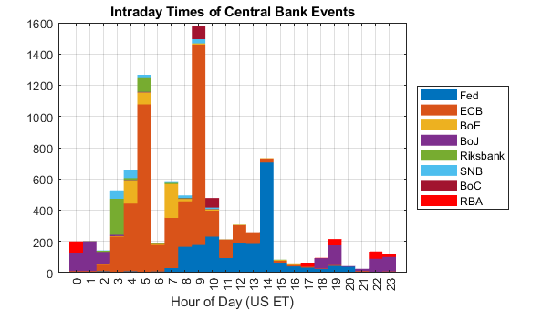Types of Announcements by Intraday Time for each Central Bank
number of events by hour of the day
 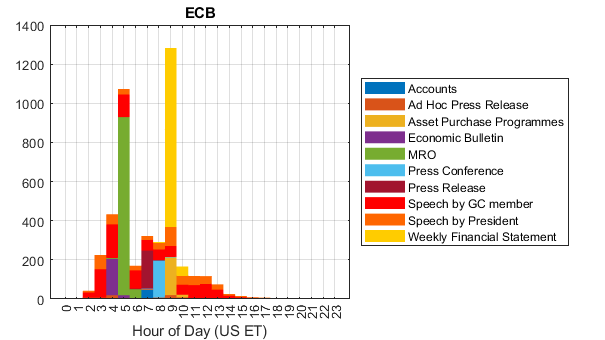 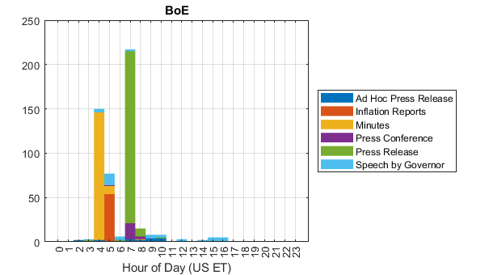
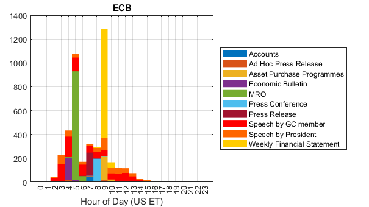 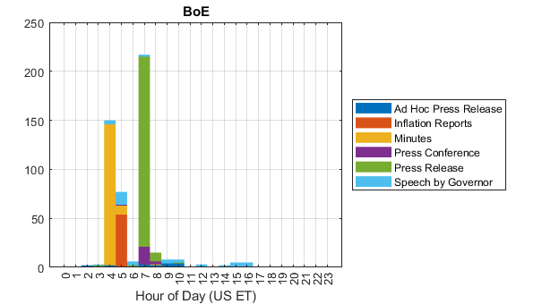 
 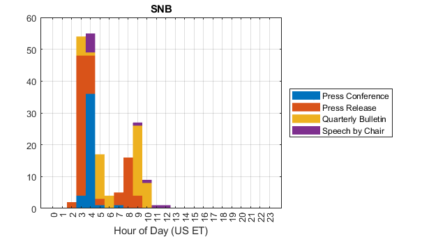
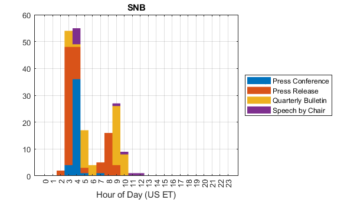